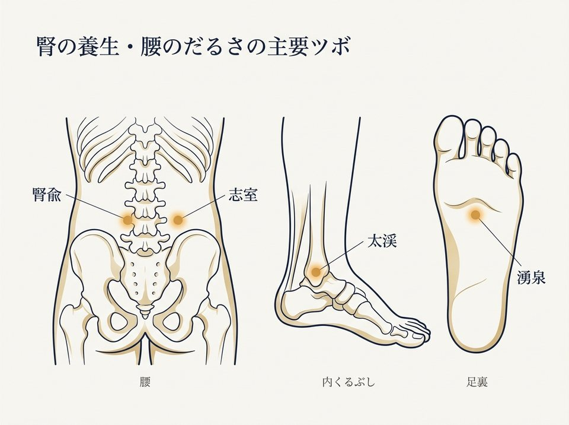

抗糸球体基底膜腎炎の鍼灸
急速進行性の指定難病のため腎臓専門医の緊急・標準治療が最優先です。寛解・安定期かつ主治医許可下の倦怠感ケアに限定します。


院長YouTube解説・関連動画
抗糸球体基底膜腎炎の症状は、血尿や尿の量が減ること
抗糸球体基底膜腎炎の症状は、血尿や尿の量が減ることです。腎臓だけに症状が現れるわけではありません。全身に現れる症状もあります。
発症して初期の段階で全身に現れる症状としては、微熱や全身の倦怠感、食欲の低下などの症状があります。病気が進むと、吐き気や息苦しさ、むくみなどの症状も現れます。
抗糸球体基底膜腎炎は、以下のような症状を引き起こすことがあります。
血尿:腎臓の損傷により、尿に血液が混じることがあります。これは尿の色がピンク、赤、または茶色に変わることでわかります。
タンパク尿:糸球体の損傷により、尿中にタンパク質が漏れ出ることがあります。
腎機能の低下:糸球体の損傷により、腎機能が低下することがあります。これには疲労感、食欲不振、浮腫（特に顔や足の腫れ）、高血圧などの症状が伴うことがあります。
関節痛:自己免疫反応に関連した関節の痛みや腫れが起こることがあります。
呼吸器系の症状:グッドパスチャー症候群の場合、抗GBM抗体が肺にも影響を及ぼすため、呼吸困難、咳、時には肺出血を引き起こすことがあります。
抗GBM腎炎は深刻な病態であり、改善を行わない場合、急速に進行する腎不全につながる可能性があります。
抗糸球体基底膜腎炎の改善方法は薬です。副腎皮質ステロイドや免疫抑制薬などを使って強い炎症を抑えるのです。改善のために血漿交換を行うことも多いです。
腎不全の状態の場合、血液透析も行います。
食事に注意することも改善のためには大事です。病気の初期段階では、タンパクや塩分を制限してカロリーをきちんと摂取することが必要です。尿の量が減っている場合、水分にも気をつける必要があります。
食事などについては医師と相談して改善を進めていきましょう。
抗糸球体基底膜腎炎は、体の免疫系が誤って腎臓の糸球体基底膜を攻撃する自己免疫の病気です。この状態の改善は、免疫系の活動を抑制し、腎臓へのさらなる損傷を防ぐことを目的としています。以下に、抗GBM腎炎の一般的な改善法を説明します。
免疫抑制剤:この病態を引き起こす自己抗体の生成を抑制するために、免疫抑制剤が使用されます。一般的に使用される免疫抑制剤には、シクロホスファミドやアザチオプリンなどがあります。
ステロイド:強力な抗炎症作用を持つステロイド（例: プレドニゾン）が、炎症を抑えるために使用されます。ステロイドは、症状の重症度に応じて、通常は数週間から数ヶ月にわたって使用されます。
血漿交換:血液中の異常な免疫グロブリン（抗GBM抗体を含む）を除去するために行われることがあります。これにより、自己抗体の濃度を迅速に低下させることができます。
症状に対する対処:高血圧や浮腫などの症状に対しては、ACE阻害剤や利尿剤などを使用して症状を管理します。
腎機能のモニタリング:腎機能の低下を抑制し、腎不全の進行を遅らせるために、腎機能を定期的にモニタリングします。
抗GBM腎炎の改善では、腎機能の状態や病態の進行度に応じて個別に調整されます。
抗糸球体基底膜腎炎の改善に用いられる薬は、主に病態の進行を抑制し、腎臓への損傷を最小限に抑えることを目的としています。以下に、抗GBM腎炎の治療に一般的に使用される薬剤について説明します。
・ステロイド（グルココルチコイド）
例: プレドニゾン
効果: 強力な抗炎症作用を持ち、免疫反応を抑制します。
副作用: 高血糖、体重増加、骨粗しょう症、感染症リスクの増加など。
・免疫抑制剤
例: シクロフォスファミド
効果: 免疫系の活動を抑制し、自己抗体の生成を減少させます。
副作用: 骨髄抑制（白血球や赤血球の減少）、膀胱炎、不妊など。
・高血圧改善のための薬剤
例: ACE阻害剤
抗GBM腎炎の改善に用いられる薬剤は、その副作用に注意を払いながら使用する必要があります。計画は症状や腎機能の状態、合併症のリスクに応じて個別に調整されるため、定期的なフォローアップが重要です。
ある程度症状が改善しても、定期的に病院に行くことが大切です。副腎皮質ステロイドなどの改善のために使っている薬に関しては医師の指示があるまでやめてはいけません。
改善には長い期間がかかるため、薬による合併症や感染症の予防も非常に大切です。食事と薬を継続することに気をつけて改善に取り組みましょう。
▼ 詳しく知りたい項目だけタップして開けます（全項目の医学解説を収録）
01. 原因とメカニズム
なぜ症状が起きるのか・鍼灸の作用機序を読む
▼
01. 原因とメカニズム
なぜ症状が起きるのか・鍼灸の作用機序を読む
自己免疫反応により抗糸球体基底膜（抗GBM）抗体が作られ、腎臓の糸球体基底膜に沈着して急速に腎機能が低下する指定難病です。中高年に多く遺伝性はないとされ、喫煙や溶剤・呼吸器感染が誘因となる場合があります。肺にも影響が及ぶと肺出血や呼吸困難を伴うグッドパスチャー症候群を引き起こします。副腎皮質ステロイド、免疫抑制薬、血漿交換、透析など腎臓専門医による迅速かつ強力な標準治療が最優先です。
なぜ鍼灸で改善へ向かうのか？（作用機序の図解）
抗糸球体基底膜腎炎に対する鍼灸は、仙髄排尿反射（陰部神経）と骨盤底の協調調整機序を通じて、お体本来の回復力を引き出します。
膀胱・尿道括約筋を支配する仙髄神経（S2〜S4）領域の経穴へ的確にアプローチします。
弱まった骨盤底筋の収縮サポートと、過敏になった膀胱排尿筋の鎮静をバランスよく促します。
腰殿部と下腹部の血流を高め、冷えや過緊張による頻尿・違和感・痛みを和らげます。
泌尿器科の評価やセルフエクササイズと併用し、安心して外出できる日常の回復を支えます。
02. よくあるお悩み
このような症状はありませんか？（4項目）
▼
02. よくあるお悩み
このような症状はありませんか？（4項目）
- ✓血尿や蛋白尿、尿量の減少を指摘された
- ✓微熱や全身の強い倦怠感、食欲低下がある
- ✓進行に伴うむくみや吐き気、高血圧が心配
- ✓寛解後の長期服薬中のだるさや体調を整えたい
03. 当院の施術アプローチ
施術の進め方・改善のポイントを見る
▼
03. 当院の施術アプローチ
施術の進め方・改善のポイントを見る
04. ツボ詳細・セルフケア一覧
腎・泌尿器・排尿トラブル・透析サポートのツボ図解（6穴）
▼
04. ツボ詳細・セルフケア一覧
腎・泌尿器・排尿トラブル・透析サポートのツボ図解（6穴）
実際の施術ではお一人おひとりの体質・症状に合わせて選穴しますが、過活動膀胱・尿失禁・前立腺症状・CKD/透析QOLの標準治療併用ケアの臨床でよく用いられる代表的なツボの目安です。
| ツボ名 | 位置の目安 | 主な狙い | セルフケアの注意点 |
|---|---|---|---|
| 腎兪（じんゆ） | 腰のくびれの高さ、背骨から指2本分外側 | 腎・泌尿器周囲の自律神経と冷え・倦怠感ケア | 腰部を温めることで夜間頻尿の負担も和らぎます。 |
| 次髎（じりょう） | 仙骨の2番目のくぼみ（お尻の上中央付近） | 仙髄排尿神経（S2〜S4）を介した膀胱機能調整の最重要穴 | 腹圧性・切迫性尿失禁や過活動膀胱の国際RCTでも定番です。 |
| 関元（かんげん） | おへそから指4本分下 | 下腹部の冷え改善・骨盤内の循環サポート | 排尿を済ませた状態で優しく温めます。 |
| 中極（ちゅうきょく） | 恥骨のすぐ上、おへそから指5本分下 | 膀胱の過敏性・残尿感・頻尿の調整 | 強く押し込まず軽く手を当てる・温める程度にします。 |
| 三陰交（さんいんこう） | 内くるぶしの上から指4本分上 | 脛骨神経を介した膀胱過活動の鎮静・睡眠の質改善 | 透析中の方はシャント腕を避け非透析日に安全に行います。 |
| 太渓（たいけい） | 内くるぶしとアキレス腱の間 | 腎経の原穴として冷え・むくみ・夜間頻尿の土台づくり | 足首を冷やさない工夫と合わせてケアします。 |
05. 医学的根拠・国際査読論文（PubMed / Cochrane）
科学的エビデンス・出典リンク一覧（2件）
▼
05. 医学的根拠・国際査読論文（PubMed / Cochrane）
科学的エビデンス・出典リンク一覧（2件）
国際的な医学データベース（PubMed・Cochrane等）で報告されている頻尿・過活動膀胱・夜間頻尿領域の代表的な査読済み鍼灸研究をまとめています（標準治療との併用や研究上の限界を含めて正確に掲載）。
| 年・研究デザイン | 対象・規模 | 主な結果 | 限界・出典 |
|---|---|---|---|
| 2022年 Cochraneレビュー | 過活動膀胱 15研究（n=1,395） | シャム鍼比で頻尿・尿意切迫感の改善可能性を報告。 | 薬物療法と同等かは不確実で泌尿器科評価が前提。 Cochrane (PMID: 36148895) |
| 2023年 メタ解析 | 過活動膀胱 30研究統合 | 排尿回数・切迫感スコアの改善傾向を示唆。 | 研究間の異質性が高い。 Front Neurol (PMID: 36712423) |
参考文献・出典
- 2022年 Cochraneレビュー（過活動膀胱 15研究（n=1,395））— Cochrane (PMID: 36148895)
- 2023年 メタ解析（過活動膀胱 30研究統合）— Front Neurol (PMID: 36712423)
06. よくある質問（FAQ）
よくあるご質問を見る（2件）
▼
06. よくある質問（FAQ）
よくあるご質問を見る（2件）
Q. 抗糸球体基底膜腎炎の診断直後でも鍼灸を受けられますか？
いいえ、急速に腎機能が低下し肺出血を伴うこともある重篤な指定難病のため、急性期は腎臓専門医によるステロイド・免疫抑制薬・血漿交換などの標準治療に専念してください。
Q. 治療が落ち着いて寛解期に入ったら相談できますか？
はい、病状が安定し主治医から鍼灸併用の許可をいただいた後であれば、免疫抑制療法中の体調管理や倦怠感・自律神経バランスを和らげる低刺激の補完ケアとして慎重に対応いたします。
あわせて読まれる関連疾患（泌尿器のお悩み）
腎臓の糸球体に異常なIgAが沈着して炎症が続く指定難病です。腎臓専門医の管理を最優先に、安定期の体調維持を優しく支えます。
腎臓専門医の薬物・基礎疾患治療と食事制限が最優先です。安定期・主治医許可下の疲労感やむくみ、自律神経を穏やかに支えます。
指定難病のため腎臓専門医の薬物・食事管理が最優先です。安定期・主治医許可下の疲労感やむくみ、自律神経を補完ケアします。
IV型コラーゲン異常により腎炎・難聴・眼症状を伴う遺伝性の指定難病です。専門医管理を最優先に安定期の体調を支えます。
IgA血管炎に伴い腎臓に炎症が起きる疾患です。腎臓専門医での治療と管理を最優先に、安定期の体調回復を穏やかに支えます。
腎臓専門医の管理と食事・薬物療法が最優先です。安定期・主治医許可下のむくみや倦怠感、自律神経を優しく整えます。
CLINICAL RECOVERY CASES
✨ 実際の臨床改善事例・回復経過を見る
銀座本院をはじめ各院での実際の改善事例を症状別に絞り込んでご確認いただけます。
おひとりで悩まず、まずはご相談ください
銀座本院・川口・大宮・横浜・博多・田無の各院でご予約を承っております。